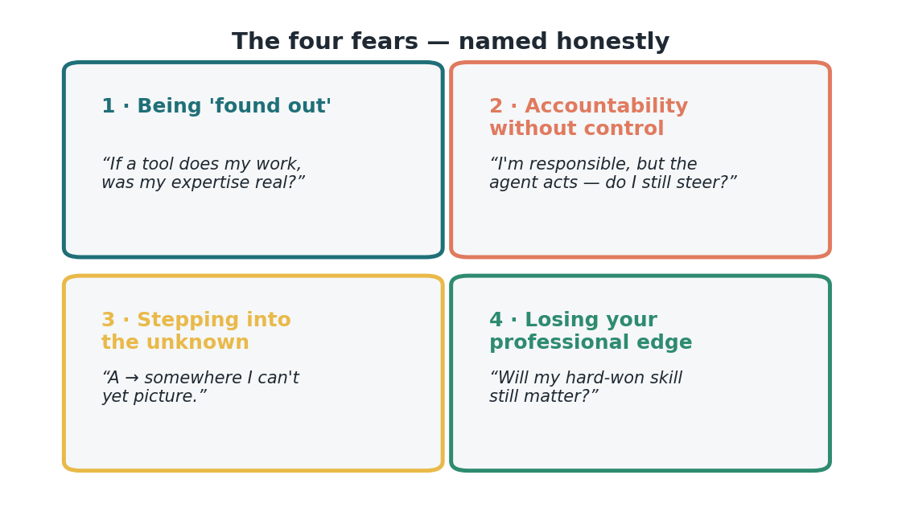
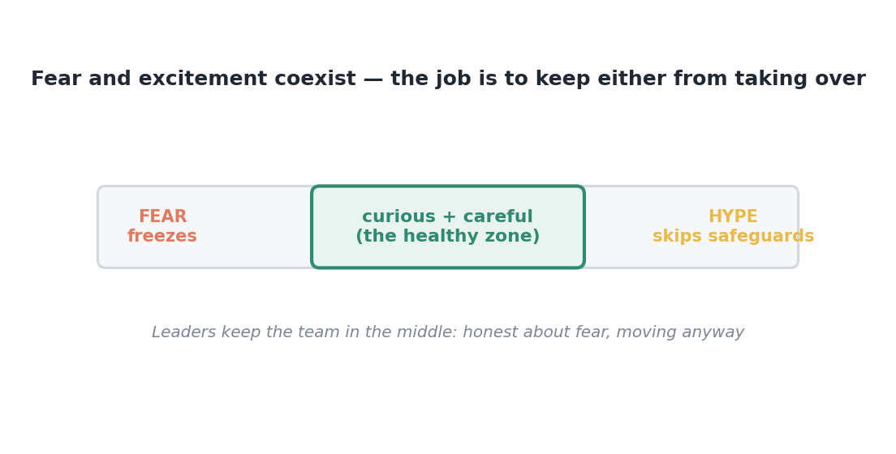

Issue 8 — The four fears agentic AI stirs, named honestly
Let me start with a finding that should reshape how we think about this: leaders consistently rank change and siloed ways of working as bigger obstacles to AI value than technology infrastructure. The binding constraint is human. And underneath the human constraint sit four specific fears. Naming them isn't weakness — it's the first step to designing around them.
Fear one: being "found out." If an agent does a chunk of my job, was my expertise real? Reframe: it can do the mechanical part because it's mechanical; the judgment that's actually you is what it can't do. Fear two: accountability without control. The human-in-the-loop answers it — you always steer, the agent only proposes. Fear three: stepping into the unknown — not A to a clear B, but A to somewhere we can't fully picture. Fear four: losing your professional edge — will hard-won skill still matter?

Each fear has a design answer. Treat these as an engineering problem, not a morale problem, because each has a concrete countermeasure. Found out → reframe and reskill toward judgment. Accountability → visible oversight. The unknown → learn by doing, in small steps. Lost edge → the evidence that human skills endure: MGI finds up to 57% of work hours are automatable, yet more than 70% of the skills organizations actually seek are the enduring, human kind. Your edge doesn't vanish; it moves up the value chain.
Why name them rather than cheerlead past them? Because a fear you can't say freezes you, and a fear you can name, you can build around. Every safeguard in this series — the review step, the identity controls, the start-small approach — exists because someone took one of these fears seriously. Fear and excitement can share the same chest; that's normal and healthy. The only real failure mode is letting a fear stay unspoken until it quietly makes the decision for you and the team stops using a good tool without ever saying why.

For those of us who lead people, this is the work — and it's measurable. Don't track logins; track trust. Pulse-check the four fears directly, and watch for declining anxiety and rising confidence as the leading indicators of the hard results (cycle time, quality, cost) that follow. A dollar spent naming and designing for these fears often buys more adoption than a dollar spent on more technology. The fears aren't a distraction from ROI; they're its rate-limiting step.
So here's my ask, staff and managers alike: let's make it safe to say the quiet parts out loud. I'll go first, and I'll tell you which of the four I feel most. When fear is spoken, it can be designed for. When it's buried, it designs us. This is a reinvention of how our work gets done, and reinventions are navigated by people who can be honest with each other about being a little afraid and moving anyway.
Sources
- Change/silos outrank infrastructure; the four fears — McKinsey, "How to close the agentic adoption gap" (Aug 7, 2026).
- MGI automation vs enduring human skills (57% / >70%) — via McKinsey (2026).
Other versions of this issue
Same idea, different angle. Story-led (A) → · Data / ROI-led (B) →